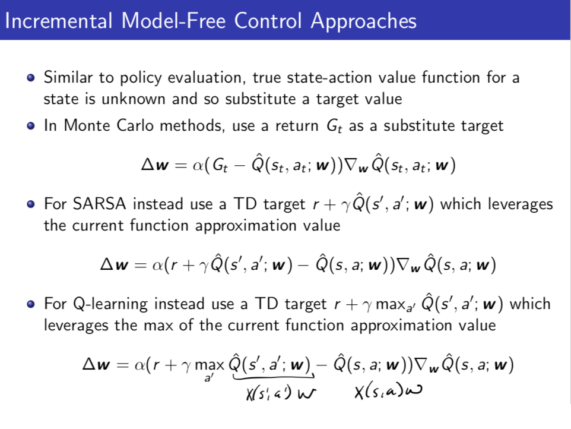

Today we estimate the Value and Q function as a function with parameters w: (V(s),Q(s,a))→(V̂ (s;w),Q̂ (s,a;w)). This helps us reduce memory, computation, and experience needed to find V,Q, π. See slides for intro.
Linear Value Function Approximation (Appendix 1): If x1(s),x2(s),⋯ are feature vectors computed over s, approximate the value function with:
V̂ (s;w)=∑j=1nxj(s)wj=x(s)Tw
Relation to Previous Material
The updates are still exactly the same as in previous lectues, only instaed of updating the value (V) function or the state-action value (Q) function, we update the weights w instead. This requires us to multiply the update step by a gradient.
The update rule is now
Δw=α(Gt−V̂ (st;w))∇wV̂ (st;w)Δw=α(r+γV̂ (st+1;w)−V̂ (st;w))∇wV̂ (st;w)Monte CarloTD Learning
Note: Change
V̂ (st;w) to
Q̂ (st,at;w) to use Q-values, in particular, using Q-values for the TD-learning step is SARSA and adding a
maxa in front of the target
Q̂ (st,a;w) term is Q-learning.
Appendix 1:
Linear Function Approximation for Value Functions (Intro)
Monte Carlo
Batch MC Value Function Approximation for Policy Evaluation
If you have all data and it is small enough, you can compute the optimal weight matrix directly and analytically.
TD Learning Function Approximation:
‘
‘'
Appendix 1.3 Linear Function Approximation for Value Functions: Convergence Guarentees’'
Def: balance equation- We look at all the all the actions we could take in the current state distribution (d(s’)), and we look at where we can transition to on the next state (p(s’|s,a)), and get the new state distribution in the next state, and they have to be identical.
The stationary distribution d(s) tells us in the long run what proprotion of the time you will spend in each of the states.
For Monte Carlo
We look at the mean squared error of our value function approximator with respect to the stationary distribution. (Intuition: We care more about states that we expect to visit a lot).
Then Monte Varlo Policy Evaluation with Linear Value Function Approximation converges to the weights with min MSE possible w.r.t the stationary distribution.
The TD learning oplicy evalutioan with linear function approimation converges to the weights with min MSE possible w.r.t the stationary distribution within a 1/(1-\gamma) boundary.
TD has a slightly higher error than MC becuase you are propagating back errors through bootstrapping.
Appendix 1.2 Eample: Baird 1995 Example for MC policy evaluation.
There are 7 states (s1,…,s7)
There are 7 features computed on the states (s1 = 2w1+w8, …, s6=2w6+w8, s7=w7+2w8) as in picture above.
Note that the feature space is larger than the state space which is totally okay.
There are two actions: a1 - deterministically go to s7, s2 - go to states s1,…,s6 with equal probability.
To make it nice there is a tiny change of termination every time you are in s7.
We start the weights as [11111111], and then we update the weights for every action in every episode.
MC updates the weights -3, while TD learning updates is -0.3. This is expected since TD learning makes smaller updates but makes them more frequently.
Control Using Value Function Approximation
This is where things start to get unstable. Now we are doing function approcmation, bootstrapping, sampling, and off-policy learning, but the real source of the instability is the off-policy learning (becuase we change our control policy over time).
Once you start combining funciton approximation (value and Q estimates are not precise) and bootstrapping (errors propagate back) and off-policy learning (the control policy changes over time depending on what current estimates are), they can fail to converge to something good.
Now the features is x_j(s,a) cover both the states and the actions

Why this starts to pose convergence problems
Summary of convergence with V
However there are some alorithms with convergence guarentees
Summary
Appendix 1.5 Eample: Baird 1995 Example for Control
Suppose you were trying to evaluate the value of a policy a1.
Suppose we use the following approach: If you ever see data that is inconsistent with policy a1 (you took anaction in a1 but did not end up in a state specified by a1), ignore it. (This is known as a behavorial policy).
However, if you use TD learning on this, your weight can not converge (diverge). Main reason for this is that the distribution of data in your new dataset is not the same as the distribution of data under your desired policy.